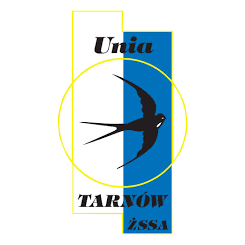
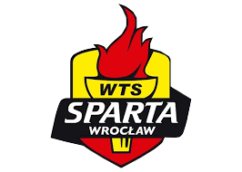

| lp. | Dane osobowe | Drużyna | Biegi | Punkty | Bonusy | Średnia | |
| 1. | Bartosz Zmarzlik | Stal Gorzów |  | 94 | 237 | 5 | 2,575 |
| 2. | Leon Madsen | Włókniarz Częstochowa |  | 97 | 227 | 10 | 2,443 |
| 3. | Nicki Pedersen | Unia Tarnów |  | 74 | 170 | 10 | 2,432 |
| 4. | Artiom Łaguta | GKM Grudziądz |  | 77 | 180 | 4 | 2,390 |
| 5. | Tai Woffinden | Sparta Wrocław |  | 95 | 195 | 15 | 2,221 |
| 6. | Emil Sayfutdinov | Unia Leszno |  | 88 | 182 | 13 | 2,216 |
| 7. | Krzysztof Kasprzak | Stal Gorzów | | 93 | 192 | 13 | 2,215 |
| 8. | Maciej Janowski | Sparta Wrocław | 93 | 188 | 17 | 2,215 | |
| 9. | Patryk Dudek | Falubaz Zielona Góra |  | 75 | 154 | 8 | 2,160 |
| 10. | Fredrik Lindgren | Włókniarz Częstochowa | | 89 | 183 | 7 | 2,146 |